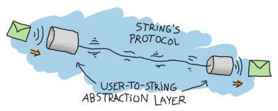
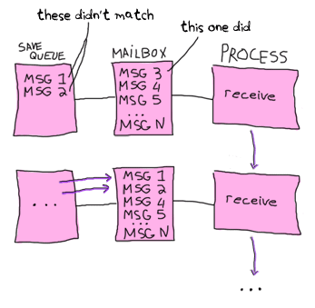

More On Multiprocessing
State Your State

The examples shown in the previous chapter were all right for demonstrative purposes, but you won't go far with only that in your toolkit. It's not that the examples were bad, it's mostly that there is not a huge advantage to processes and actors if they're just functions with messages. To fix this, we have to be able to hold state in a process.
Let's first create a function in a new kitchen.erl module that will let a process act like a fridge. The process will allow two operations: storing food in the fridge and taking food from the fridge. It should only be possible to take food that has been stored beforehand. The following function can act as the base for our process:
-module(kitchen).
-compile(export_all).
fridge1() ->
receive
{From, {store, _Food}} ->
From ! {self(), ok},
fridge1();
{From, {take, _Food}} ->
%% uh....
From ! {self(), not_found},
fridge1();
terminate ->
ok
end.
Something's wrong with it. When we ask to store the food, the process should reply with ok, but there is nothing actually storing the food; fridge1() is called and then the function starts from scratch, without state. You can also see that when we call the process to take food from the fridge, there is no state to take it from and so the only thing to reply is not_found. In order to store and take food items, we'll need to add state to the function.
With the help of recursion, the state to a process can then be held entirely in the parameters of the function. In the case of our fridge process, a possibility would be to store all the food as a list, and then look in that list when someone needs to eat something:
fridge2(FoodList) ->
receive
{From, {store, Food}} ->
From ! {self(), ok},
fridge2([Food|FoodList]);
{From, {take, Food}} ->
case lists:member(Food, FoodList) of
true ->
From ! {self(), {ok, Food}},
fridge2(lists:delete(Food, FoodList));
false ->
From ! {self(), not_found},
fridge2(FoodList)
end;
terminate ->
ok
end.
The first thing to notice is that fridge2/1 takes one argument, FoodList. You can see that when we send a message that matches {From, {store, Food}}, the function will add Food to FoodList before going. Once that recursive call is made, it will then be possible to retrieve the same item. In fact, I implemented it there. The function uses lists:member/2 to check whether Food is part of FoodList or not. Depending on the result, the item is sent back to the calling process (and removed from FoodList) or not_found is sent back otherwise:
1> c(kitchen).
{ok,kitchen}
2> Pid = spawn(kitchen, fridge2, [[baking_soda]]).
<0.51.0>
3> Pid ! {self(), {store, milk}}.
{<0.33.0>,{store,milk}}
4> flush().
Shell got {<0.51.0>,ok}
ok
Storing items in the fridge seems to work. We'll try with some more stuff and then try to take it from the fridge.
5> Pid ! {self(), {store, bacon}}.
{<0.33.0>,{store,bacon}}
6> Pid ! {self(), {take, bacon}}.
{<0.33.0>,{take,bacon}}
7> Pid ! {self(), {take, turkey}}.
{<0.33.0>,{take,turkey}}
8> flush().
Shell got {<0.51.0>,ok}
Shell got {<0.51.0>,{ok,bacon}}
Shell got {<0.51.0>,not_found}
ok
As expected, we can take bacon from the fridge because we have put it in there first (along with the milk and baking soda), but the fridge process has no turkey to find when we request some. This is why we get the last {<0.51.0>,not_found} message.
We love messages, but we keep them secret
Something annoying with the previous example is that the programmer who's going to use the fridge has to know about the protocol that's been invented for that process. That's a useless burden. A good way to solve this is to abstract messages away with the help of functions dealing with receiving and sending them:
store(Pid, Food) ->
Pid ! {self(), {store, Food}},
receive
{Pid, Msg} -> Msg
end.
take(Pid, Food) ->
Pid ! {self(), {take, Food}},
receive
{Pid, Msg} -> Msg
end.
Now the interaction with the process is much cleaner:
9> c(kitchen).
{ok,kitchen}
10> f().
ok
11> Pid = spawn(kitchen, fridge2, [[baking_soda]]).
<0.73.0>
12> kitchen:store(Pid, water).
ok
13> kitchen:take(Pid, water).
{ok,water}
14> kitchen:take(Pid, juice).
not_found
We don't have to care about how the messages work anymore, if sending self() or a precise atom like take or store is needed: all that's needed is a pid and knowing what functions to call. This hides all of the dirty work and makes it easier to build on the fridge process.
One thing left to do would be to hide that whole part about needing to spawn a process. We dealt with hiding messages, but then we still expect the user to handle the creation of the process. I'll add the following start/1 function:
start(FoodList) ->
spawn(?MODULE, fridge2, [FoodList]).

Here, ?MODULE is a macro returning the current module's name. It doesn't look like there are any advantages to writing such a function, but there really are some. The essential part of it would be consistency with the calls to take/2 and store/2: everything about the fridge process is now handled by the kitchen module. If you were to add logging when the fridge process is started or start a second process (say a freezer), it would be really easy to do inside our start/1 function. However if the spawning is left for the user to do through spawn/3, then every place that starts a fridge now needs to add the new calls. That's prone to errors and errors suck.
Let's see this function put to use:
15> f().
ok
16> c(kitchen).
{ok,kitchen}
17> Pid = kitchen:start([rhubarb, dog, hotdog]).
<0.84.0>
18> kitchen:take(Pid, dog).
{ok,dog}
19> kitchen:take(Pid, dog).
not_found
Yay! The dog has got out of the fridge and our abstraction is complete!
Time Out
Let's try a little something with the help of the command pid(A,B,C), which lets us change the 3 integers A, B and C into a pid. Here we'll deliberately feed kitchen:take/2 a fake one:
20> kitchen:take(pid(0,250,0), dog).
Woops. The shell is frozen. This happened because of how take/2 was implemented. To understand what goes on, let's first revise what happens in the normal case:
- A message to take food is sent from you (the shell) to the fridge process;
- Your process switches to receive mode and waits for a new message;
- The fridge removes the item and sends it to your process;
- Your process receives it and moves on with its life.
And here's what happens when the shell freezes:
- A message to take food is sent from you (the shell) to an unknown process;
- Your process switches to receive mode and waits for a new message;
- The unknown process either doesn't exist or doesn't expect such a message and does nothing with it;
- Your shell process is stuck in receive mode.
That's annoying, especially because there is no error handling possible here. Nothing illegal happened, the program is just waiting. In general, anything dealing with asynchronous operations (which is how message passing is done in Erlang) needs a way to give up after a certain period of time if it gets no sign of receiving data. A web browser does it when a page or image takes too long to load, you do it when someone takes too long before answering the phone or is late at a meeting. Erlang certainly has an appropriate mechanism for that, and it's part of the receive construct:
receive
Match -> Expression1
after Delay ->
Expression2
end.
The part in between receive and after is exactly the same that we already know. The after part will be triggered if as much time as Delay (an integer representing milliseconds) has been spent without receiving a message that matches the Match pattern. When this happens, Expression2 is executed.
We'll write two new interface functions, store2/2 and take2/2, which will act exactly like store/2 and take/2 with the exception that they will stop waiting after 3 seconds:
store2(Pid, Food) ->
Pid ! {self(), {store, Food}},
receive
{Pid, Msg} -> Msg
after 3000 ->
timeout
end.
take2(Pid, Food) ->
Pid ! {self(), {take, Food}},
receive
{Pid, Msg} -> Msg
after 3000 ->
timeout
end.
Now you can unfreeze the shell with ^G and try the new interface functions:
User switch command
--> k
--> s
--> c
Eshell V5.7.5 (abort with ^G)
1> c(kitchen).
{ok,kitchen}
2> kitchen:take2(pid(0,250,0), dog).
timeout
And now it works.
Note: I said that after only takes milliseconds as a value, but it is actually possible to use the atom infinity. While this is not useful in many cases (you might just remove the after clause altogether), it is sometimes used when the programmer can submit the wait time to a function where receiving a result is expected. That way, if the programmer really wants to wait forever, he can.
There are uses to such timers other than giving up after too long. One very simple example is how the timer:sleep/1 function we've used before works. Here's how it is implemented (let's put it in a new multiproc.erl module):
sleep(T) ->
receive
after T -> ok
end.
In this specific case, no message will ever be matched in the receive part of the construct because there is no pattern. Instead, the after part of the construct will be called once the delay T has passed.
Another special case is when the timeout is at 0:
flush() ->
receive
_ -> flush()
after 0 ->
ok
end.
When that happens, the Erlang VM will try and find a message that fits one of the available patterns. In the case above, anything matches. As long as there are messages, the flush/0 function will recursively call itself until the mailbox is empty. Once this is done, the after 0 -> ok part of the code is executed and the function returns.
Selective Receives
This 'flushing' concept makes it possible to implement a selective receive which can give a priority to the messages you receive by nesting calls:
important() ->
receive
{Priority, Message} when Priority > 10 ->
[Message | important()]
after 0 ->
normal()
end.
normal() ->
receive
{_, Message} ->
[Message | normal()]
after 0 ->
[]
end.
This function will build a list of all messages with those with a priority above 10 coming first:
1> c(multiproc).
{ok,multiproc}
2> self() ! {15, high}, self() ! {7, low}, self() ! {1, low}, self() ! {17, high}.
{17,high}
3> multiproc:important().
[high,high,low,low]
Because I used the after 0 bit, every message will be obtained until none is left, but the process will try to grab all those with a priority above 10 before even considering the other messages, which are accumulated in the normal/0 call.
If this practice looks interesting, be aware that is is sometimes unsafe due to the way selective receives work in Erlang.
When messages are sent to a process, they're stored in the mailbox until the process reads them and they match a pattern there. As said in the previous chapter, the messages are stored in the order they were received. This means every time you match a message, it begins by the oldest one.
That oldest message is then tried against every pattern of the receive until one of them matches. When it does, the message is removed from the mailbox and the code for the process executes normally until the next receive. When this next receive is evaluated, the VM will look for the oldest message currently in the mailbox (the one after the one we removed), and so on.
When there is no way to match a given message, it is put in a save queue and the next message is tried. If the second message matches, the first message is put back on top of the mailbox to be retried later.
This lets you only care about the messages that are useful. Ignoring some messages to handle them later in the manner described above is the essence of selective receives. While they're useful, the problem with them is that if your process has a lot of messages you never care about, reading useful messages will actually take longer and longer (and the processes will grow in size too).
In the drawing above, imagine we want the 367th message, but the first 366 are junk ignored by our code. To get the 367th message, the process needs to try to match the 366 first ones. Once it's done and they've all been put in the queue, the 367th message is taken out and the first 366 are put back on top of the mailbox. The next useful message could be burrowed much deeper and take even longer to be found.
This kind of receive is a frequent cause of performance problems in Erlang. If your application is running slow and you know there are lots of messages going around, this could be the cause.
If such selective receives are effectively causing a massive slowdown in your code, the first thing to do is to ask yourself is why you are getting messages you do not want. Are the messages sent to the right processes? Are the patterns correct? Are the messages formatted incorrectly? Are you using one process where there should be many? Answering one or many of these questions could solve your problem.
Because of the risks of having useless messages polluting a process' mailbox, Erlang programmers sometimes take a defensive measure against such events. A standard way to do it might look like this:
receive
Pattern1 -> Expression1;
Pattern2 -> Expression2;
Pattern3 -> Expression3;
...
PatternN -> ExpressionN;
Unexpected ->
io:format("unexpected message ~p~n", [Unexpected])
end.
What this does is make sure any message will match at least one clause. The Unexpected variable will match anything, take the unexpected message out of the mailbox and show a warning. Depending on your application, you might want to store the message into some kind of logging facility where you will be able to find information about it later on: if the messages are going to the wrong process, it'd be a shame to lose them for good and have a hard time finding why that other process doesn't receive what it should.
In the case you do need to work with a priority in your messages and can't use such a catch-all clause, a smarter way to do it would be to implement a min-heap or use the gb_trees module and dump every received message in it (make sure to put the priority number first in the key so it gets used for sorting the messages). Then you can just search for the smallest or largest element in the data structure according to your needs.
In most cases, this technique should let you receive messages with a priority more efficiently than selective receives. However, it could slow you down if most messages you receive have the highest priority possible. As usual, the trick is to profile and measure before optimizing.
Note: Since R14A, a new optimization has been added to Erlang's compiler. It simplifies selective receives in very specific cases of back-and-forth communications between processes. An example of such a function is optimized/1 in multiproc.erl.
To make it work, a reference (make_ref()) has to be created in a function and then sent in a message. In the same function, a selective receive is then made. If no message can match unless it contains the same reference, the compiler automatically makes sure the VM will skip messages received before the creation of that reference.
Note that you shouldn't try to coerce your code to fit such optimizations. The Erlang developers only look for patterns that are frequently used and then make them faster. If you write idiomatic code, optimizations should come to you. Not the other way around.
With these concepts understood, the next step will be to do error handling with multiple processes.